github-profile-orbit
Genera un mapa cósmico vectorial (SVG) de tu ecosistema de repositorios y tecnologías para tu GitHub Profile README en 3 sencillos pasos.
Paso 1: Identifica tu Usuario de GitHub
Escribe tu usuario para buscar tu cuenta y cargar tus repositorios reales en tiempo real.
Paso 2: Personaliza tu Ecosistema
Selecciona las plantillas que deseas generar (una, varias o todas), el modo de color y tus opciones avanzadas.
Sistema solar orbital donde tu avatar es el sol y tus repositorios orbitan clasificados por tamaño y tecnologías.
Cordillera gráfica moderna que compara el volumen de líneas y actividad con métricas de productividad.
Grafo de nodos y constelaciones tecnológicas que conecta repositorios por lenguajes compartidos.
Insignia compacta y formal de estadísticas con distribución de lenguajes de alto impacto.
Aparece en el encabezado de las plantillas (opcional).
Nombres exactos o comodines separados por comas.
Repositorios donde participaste. Se computarán tus contribuciones reales.
Paso 3: Visualización Generada y Workflow Listo
Revisa tus gráficos vectoriales calculados en tiempo real con tus datos reales y copia la Action para automatizar la actualización.
